Algoritmos de busca
São algoritmos que recebem um problema de busca como entrada e produzem uma solução, estes usam algo chamado árvore de busca, estes são compostos por nós que representam um estado específico e as bordas que correspondem a ações que levam a diferentes estados; essas árvores formam múltiplas rotas do nó raiz que é o estado inicial do problema, o objetivo do algoritmo de busca é encontrar uma rota que leve ao nó (estado) alvo. A árvore da busca faz parte de algo conhecido como espaço de estados, estes são os múltiplos e provavelmente infinitos estados que existem no mundo e as ações que levam de um estado para outro; o arvore de busca são caminhos específicos neste espaço de estados que se originam a partir de um único estado raiz. [5] Em uma árvore de busca existem dois tipos de nós, nós pai, que são os nós a partir dos quais outros nós são gerados, estes nós gerados passam a ser chamados de nós filhos ou sucessores. [5] A fronteira é conhecida como a separação da região onde todos os nós foram expandidos, ou seja, são mostrados os nós sucessores conectados a este sem escolher nenhum e a região onde estão aqueles nós que ainda não foram alcançados. [5]
Busca primeiro o melhor
É uma forma de escolher qual dos nós vai expandir, esta baseia-se em escolher o caminho que tem o menor custo possível, esse custo é determinado por uma função de avaliação; o resultado será uma indicação de falha ou um caminho para um nó alvo. [5]
Estruturas de dados de busca
Nós
Para armazenar os nós, uma estrutura de dados com quatro componentes é usada.
- node.STATE: o estado que corresponde ao nó. [5]
- node.PARENT: o nó que gera o nó atual. [5]
- node.ACTION: a ação que foi aplicada ao nó pai para gerar este nó. [5]
- node.PATH-COST: o custo total do caminho do nó inicial ao atual. [5]
Fronteira
Para armazenar a fronteira é usada uma fila, as operações nessa fronteira são:
- IS-EMPTY(frontier): só retorna True quando não há nós na fronteira. [5]
- POP(frontier): remove o nó superior da fronteira e apresenta-lo. [5]
- TOP(frontier): apresenta, mas não elimina, o nó superior da fronteira. [5]
- ADD(node, frontier): insere um nó na fronteira. [5]
Tipos de filas
- Fila de prioridade: o primeiro nó que usar a função POP será aquele com o custo mínimo determinado pela função de avaliação. [5]
- Fila FIFO: o primeiro nó a ser usado pela função POP, será aquele que foi inserido primeiro na fila. [5]
- Fila LIFO: o primeiro nó a ser usado pela função POP será aquele que foi inserido mais recentemente na fila. [5]
Medir el rendimiento en la resolución de problemas
Critério utilizado para escolher algoritmos de busca, o desempenho pode ser medido em quatro formas:
- Completude: O algoritmo pode encontrar uma solução ou relatar sua falha quando não há uma? O algoritmo deve ser capaz, independentemente do tamanho do espaço, chegar a um estado que esteja conectado com o estado inicial. [5]
- Otimização de custos: Pode encontrar uma solução com o menor custo de todas as soluções? [5]
- Complexidade de tempo: Quanto tempo leva para encontrar uma solução. Pode ser medido em uma unidade de tempo como segundos ou pelo número de ações e estados. [5]
- Complexidade do espaço: Quanta memória é usada para fazer a busca. [5]
Busca cega
Algoritmos que não possuem informações sobre o espaço de busca, dependem unicamente da estrutura do espaço de busca para encontrar uma solução. [5] Eles são apenas capazes de gerar sucessores e diferenciar entre o estado objetivo e não-objetivo. Os planos para chegar ao estado-alvo a partir do estado inicial são diferenciados apenas pela ordem e duração das ações. [6]
Busca por amplitude
Estratégia apropriada quando todas as ações têm o mesmo custo, baseia-se em expandir primeiro todos os nós pai antes de expandir seus sucessores, começando com o nó raiz. É uma estratégia de busca sistemática, então funciona mesmo em espaços de estados infinitos. A função de avaliação é o número de ações que são tomadas para chegar a um nó. Para essa estratégia, uma fila FIFO é usada, onde os novos nós vão para o final da fila e os mais antigos ficam no início. Essa estratégia permite verificar se um estado é o alvo antes que ele saia da fila, porque uma vez que um estado foi atingido não será possível encontrar um caminho melhor. Busca por profundidade sempre encontra uma solução com o menor número de ações pois esta gera todos os nós em um "nível" antes de passar ao próximo pelo que se a solução estiver nesse "nível" já teria sido encontrada. Esta estratégia possui uma complexidade de tempo e espaço de O(bd) onde b são os nós sucessores e d é a profundidade da árvore de busca. [5]
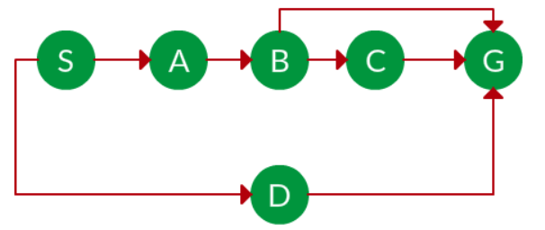
Exemplo de problema a ser resolvido onde se deve ir de S para G.
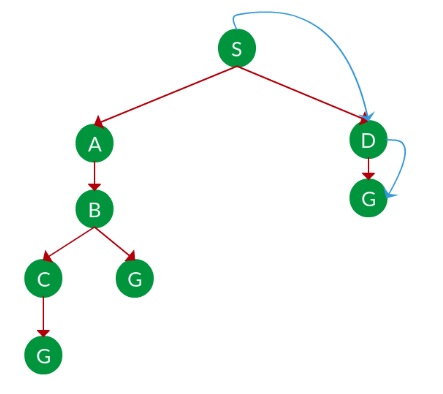
Solução BFS para o problema.
Algoritmo de Dijkstra
Também conhecido como busca de custo uniforme é usado quando as ações têm custos diferentes, baseia-se em expandir primeiro o estado que tem o menor custo, esses custos são atribuídos com base no custo que têm todas as ações tomadas para chegar a esse estado. Se durante o processo for encontrado um caminho com menor custo para um estado que já havia sido alcançado, este caminho substituirá o anterior. A complexidade do algoritmo de Dijkstra é de O(b1 + [C/e]) onde C é o custo da solução ideal, e é o custo mínimo de uma ação com e > 0 e b é o número de vizinhos por nó. Esta estratégia é completa e de custo ótimo, pois a primeira solução que encontrar terá um custo tão baixo quanto o custo de qualquer outro nó. [5]
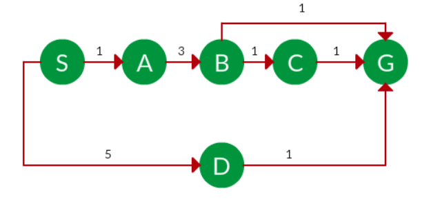
Exemplo de problema a ser resolvido onde se deve ir de S para G.
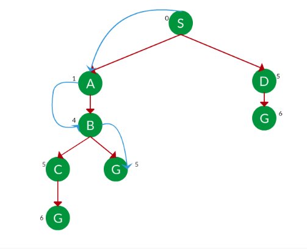
Solução para o problema usando algoritmo dijkstra.
Busca por profundidade
Esta estratégia é baseada em expandir primeiro os nós sucessores antes de expandir os nós pai, nesta mente automaticamente "abaixa" tudo o que pode na árvore de busca até encontrar um nó que não tenha sucessores, Então, um nível é elevado e verifica se o nó pai tem outros nós sucessores não expandidos, se este for o caso, passa a expandir estes. Esta estratégia não é eficaz em custo, pois retorna a primeira solução que encontra. Somente é eficaz em espaços finitos que são árvores, em espaços cíclicos pode ficar presa em um loop infinito e em espaços infinitos é possível que termine presa em um caminho infinito mesmo não havendo ciclos, pelo que não é sistemática. Uma das suas principais vantagens e a principal razão pela qual é usado é a baixa quantidade de memória necessária. Sua complexidade espacial, somente em espaços onde é aplicável, é de O(bm) onde b é o fator de ramificação (número de filhos em cada nó) e m é a profundidade máxima da árvore. [5]
Exemplo de problema a ser resolvido onde se deve ir de S para G.
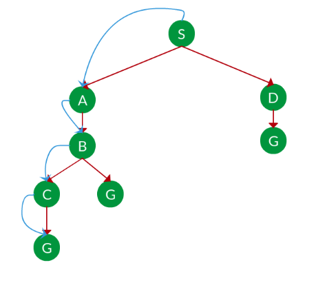
Solução DFS para o problema.
Busca por profundidade limitada
É uma versão de busca por profundidade na qual os nós que estão em uma profundidade l definida anteriormente, serão considerados como se não tivessem sucessores. Isso é feito com o objetivo de que a busca por profundidade não fique presa em um caminho infinito. A complexidade do espaço é O(bl) enquanto que a complexidade do tempo é O(bl) onde b é o fator de ramificação (número de filhos em cada nó) e l é a profundidade limite. Escolher o limite certo é muito importante, pois disso depende que o algoritmo possa alcançar a solução. Para aumentar a qualidade do limite definido pode-se usar informação que está disponível sobre o problema. Uma maneira bastante simples de definir esse limite é o número de nós na árvore menos um; no entanto, uma forma muito mais eficaz que é usar o diâmetro do grafo, este é o caminho mais curto entre os nós mais distantes no grafo. Infelizmente, na maioria dos casos, informações como o diâmetro não estarão disponíveis até que o problema seja resolvido. [5]
Busca iterativa de aprofundamento
Versão do algoritmo usado como solução para o problema de encontrar um limite apropriado l, isso é feito executando o algoritmo usando cada valor possível, começando de zero, até que uma solução seja encontrada ou até que uma falha seja retornado. Seu uso é ótimo quando as ações custam o mesmo e é completo em espaços finitos sem ciclos ou quando os nós são verificados para ciclos ao longo do caminho. Os requisitos de memória não são tão altos sendo sua complexidade espacial O(bd) se houver solução ou O(bm) em espaços finitos onde não há. Isso é conseguido porque este algoritmo opta por gerar todos os nós novamente para cada iteração em vez de mantê-los na memória, no entanto, isto resulta em um aumento no tempo de execução. A complexidade do tempo é O(bd) quando há solução ou O(bm) quando não há. Para as complexidades b é o fator de ramificação (número de filhos em cada nó), m é a profundidade máxima (que aumenta em cada iteração) e d é a profundidade onde o alvo está. [5]
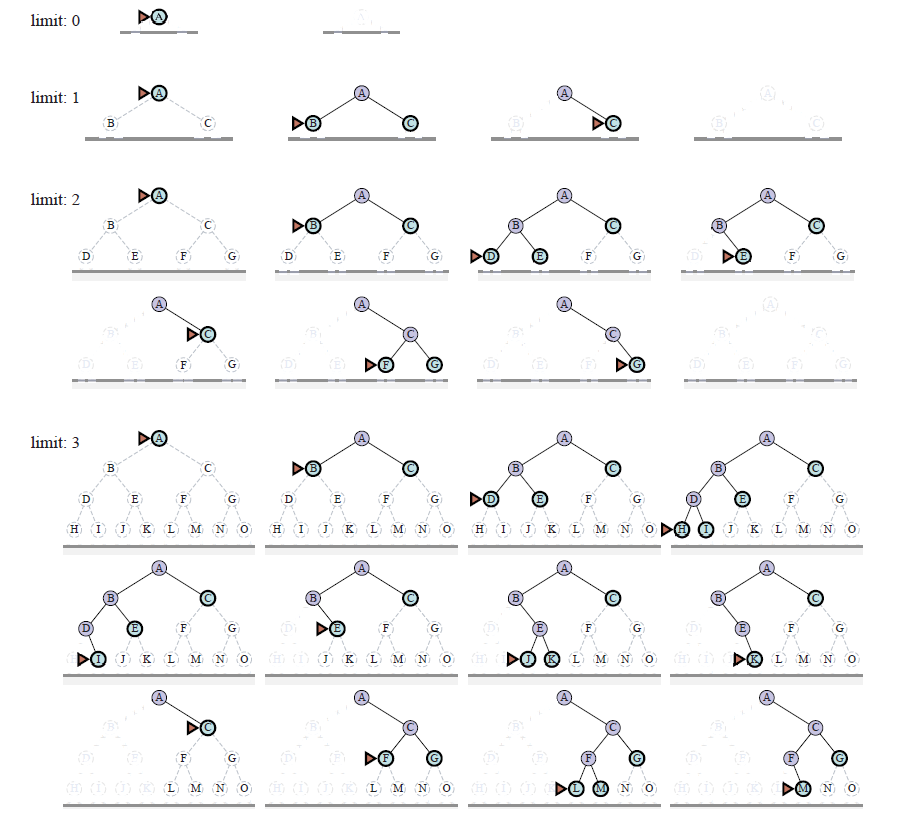
Exemplo de algoritmo DFS iterativo.
Busca bidirecional
Algoritmo no qual são feitas duas buscas ao mesmo tempo, uma do nó raiz e outra do nó alvo, isto com a intenção de que as duas buscas se encontrem para assim chegar à solução. Para que isso funcione corretamente é necessário manter duas tabelas de nós a que se chegou, duas fronteiras e ser capaz de raciocinar ao contrário (os papéis de nó pai e sucessor são invertidos quando vistos da perspectiva do outro busqueda). Para saber qual nó expandir usa a função de avaliação, expande o nó que tem o menor valor entre as duas fronteiras. A complexidade de tempo e espaço é O(bd/2) onde b é o fator de ramificação (número de filhos em cada nó) e d é a profundidade onde o alvo está. [5]
Exemplo de implementação de busca cega
Algoritmo que usa BFS bidirecional para resolver um problema de escada de palavras. Tenta converter uma palavra em outra. Neste exemplo, você só pode usar palavras que estão na lista e uma palavra só pode ser convertida em outra se a diferença for de uma letra.
from collections import deque
def word_ladder_bidirectional_bfs(begin_word, end_word, word_list):
if end_word not in word_list:
return 0
word_list = set(word_list)
word_list.add(begin_word)
begin_queue = deque([(begin_word, 1)])
end_queue = deque([(end_word, 1)])
begin_visited = {begin_word: 1}
end_visited = {end_word: 1}
while begin_queue and end_queue:
result = bfs_step(begin_queue, begin_visited, end_visited, word_list)
if result:
return result
result = bfs_step(end_queue, end_visited, begin_visited, word_list)
if result:
return result
return 0
def bfs_step(queue, visited, other_visited, word_list):
current_word, level = queue.popleft()
for i in range(len(current_word)):
for char in 'abcdefghijklmnopqrstuvwxyz':
transformed_word = current_word[:i] + char + current_word[i+1:]
if transformed_word in word_list:
if transformed_word in other_visited:
return level + other_visited[transformed_word]
if transformed_word not in visited:
visited[transformed_word] = level + 1
queue.append((transformed_word, level + 1))
return None
if __name__ == "__main__":
word_list = ["hot", "dot", "dog", "lot", "log", "cog"]
print("Words in word list: ")
for word in word_list:
print(word)
begin_word = "hit"
end_word = "cog"
result = word_ladder_bidirectional_bfs(begin_word, end_word, word_list)
if result:
print(f"The shortest transformation sequence length is: {result}")
else:
print("No valid transformation sequence exists.")
Busca informada
Algoritmos que têm informações no estado alvo que usam para aumentar a eficácia dos buscas. Esta informação vem na forma de heurísticas que são funções usadas para estimar a distância do estado alvo que ajudam a priorizar caminhos e não realizar explorações desnecessárias. Alguns exemplos de heuristicas são a distância de Manhattan e a distância euclidiana. Diferentes heurísticas são usadas dependendo do algoritmo que será implementado. [6]
Greedy melhor-primeira busca
Uma forma de busca do melhor primeiro em que primeiro se expande o nó mais próximo ao alvo, esta distância pode ser expandida usando uma heurística h(x) expandindo o nó com o menor valor dado por essa heurística. Este algoritmo é completo em espaços finitos, mas não em espaços infinitos. Complexidade de espaço e tempo no mas dos casos é O(|V|), sem embrago com uma boa heurística a complexidade pode ser reduzida até O(bm) em certos problemas. Para escolher uma boa heurística é necessário ter uma quantidade de informações sobre o ambiente, qual heurística será usada depende do problema em questão. Um exemplo de heurística seria a distância da linha reta, que está relacionada à distância real dos caminhos. [5]
Busca A∗
Estratégia que combina busca de custo uniforme e busca gananciosa, primeiro expande o nó que tem o menor valor f(n) que é calculado somando g(n), custo regressivo que é o custo do nó inicial até o nó atual n, com h(n), custo futuro que é o menor custo estimado do nó atual para o nó alvo. [6] A complexidade depende da heurística usada, no pior dos casos esta será igual à de busca de custo uniforme. A eficácia desta busca depende de que a heurística seja admissível, ou seja, não superestime o custo real de alcançar o nó alvo. Uma das principais desvantagens é o alto consumo de tempo e espaço de memória, pois muitos nós são expandidos. [5]
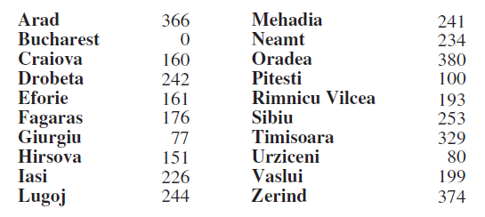
Custo de chegar a cada nó para o exemplo de algoritmo de busca A∗.
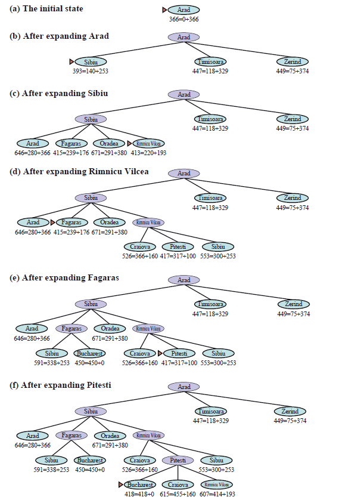
Exemplo de algoritmo de busca A∗.
Busca A∗ ponderada
Variação de busca A em que se introduz um peso na fórmula f(n) ficando assim f(n) = g(n) + Wh(n), onde W seria o peso do nó, este sempre deve ser maior que um e seu valor aumentará quanto mais próximo este dito nó do nó alvo, Isso permite que o algoritmo explore os nós que podem ter um valor h(n) baixo. Este algoritmo só deve ser aplicado se você pode aceitar soluções subótimas, pois não garante o menor custo possível, em troca consome menos espaço e encontra uma solução em menos tempos porque expande menos nós. A complexidade é bastante semelhante à busca A* com várias variações. [8]
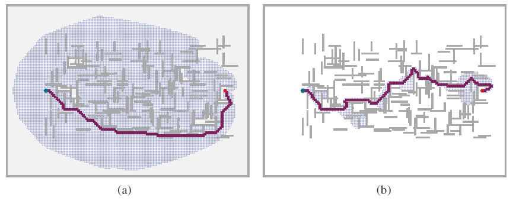
Comparação de busca A∗ (a) com Busca A∗ ponderada (b). As barras cinzas são obstáculos, a linha roxa é o caminho do início verde até a meta vermelha, e os pequenos pontos são estados que foram alcançados por cada busca.
Busca de feixe
Algoritmo de busca com funcionalidade similar à busca por profundidade, já que gera todos os sucessores em um nível, porém neste caso limitamos os nós que podem ser expandidos, só considerando aqueles que têm os melhores valores dados pela heurística. O número de nós que podem expandir é conhecido como a largura do raio (W) que é definida manualmente. Para saber quantos nós serão avaliados, multiplique-se a largura do feixe pelo fator de ramificação W * B. [9] Este algoritmo é incompleto e subótimo, pois não garante a solução com menos custo em troca de executar extremamente rápido e consumir muito menos memória porque expande menos nós. Na prática, ele é capaz de encontrar soluções muito próximas das ótimas para muitos problemas. Essa eficácia depende muito da qualidade da heurística. Complexidade do tempo é O(bW) e complexidade do espaço é O(mW*b) onde b é o fator de ramificação (número de filhos em cada nó), m é a profundidade máxima e W é a largura do raio. [5]
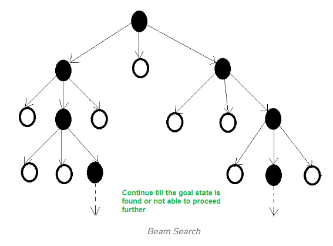
Árvore de busca de feixe, com W = 2 e B = 3 - Apenas dois nós (nós pretos) são selecionados com base em seus valores heurísticos para expansão adicional em cada nível
Busca A∗ com aprofundamento iterativo
Algoritmo que combina recursos de busca por profundidade iterativa com a busca A. [10] Limita o uso de memória ao não salvar os nós visitados, isso faz com que eles sejam visitados novamente em cada iteração. [5] O número de nós expandidos depende do valor de f(n), isto é feito expandindo os nós até chegar a um com um valor f(n) maior que um limite definido, a iteração termina quando se chega a todos os nós com valores maiores que o limite. O valor limite aumenta a cada iteração. O valor f(n) é calculado g(n) + h(n). Este algoritmo garante encontrar a solução com o menor custo possível, além de também funciona em espaços infinitos tudo isso com um uso limitado de memória, em troca é mais lento que procura A pois tem que percorrer todos os nós em cada iteração, até mesmo de exigir maior poder de processamento. [!0]
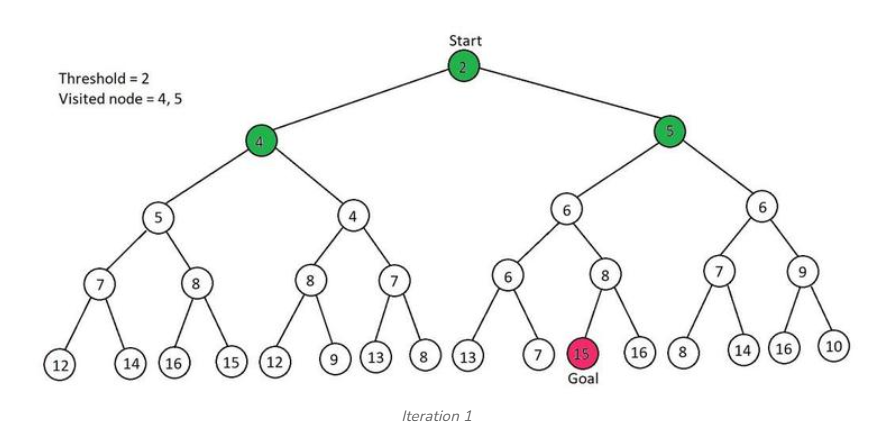
Primeira iteração do algoritmo de busca A∗ com aprofundamento iterativa.
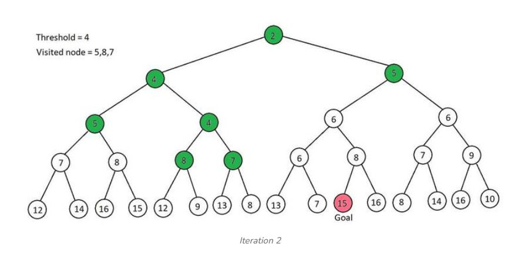
Segunda iteração do algoritmo de busca A∗ com aprofundamento iterativa.
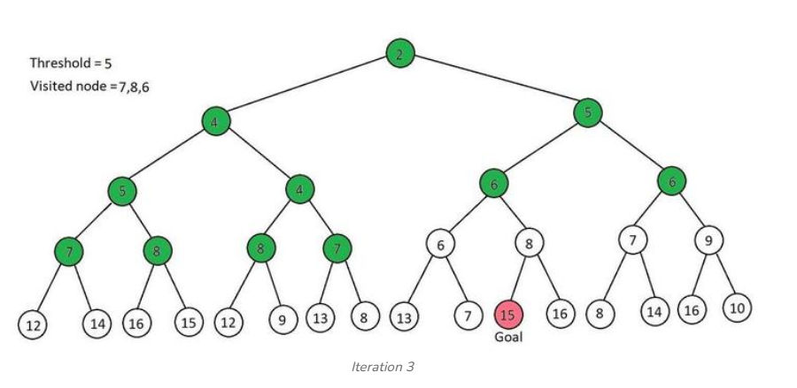
Terceira iteração do algoritmo de busca A∗ com aprofundamento iterativa.
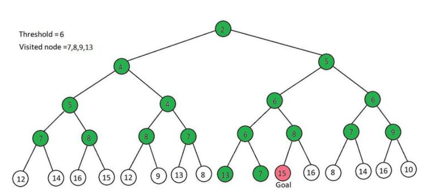
Quarta iteração do algoritmo de busca A∗ com aprofundamento iterativa.
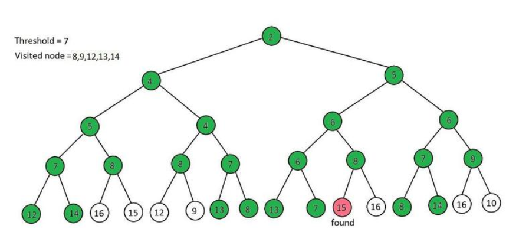
Quinta iteração do algoritmo de busca A∗ com aprofundamento iterativa.
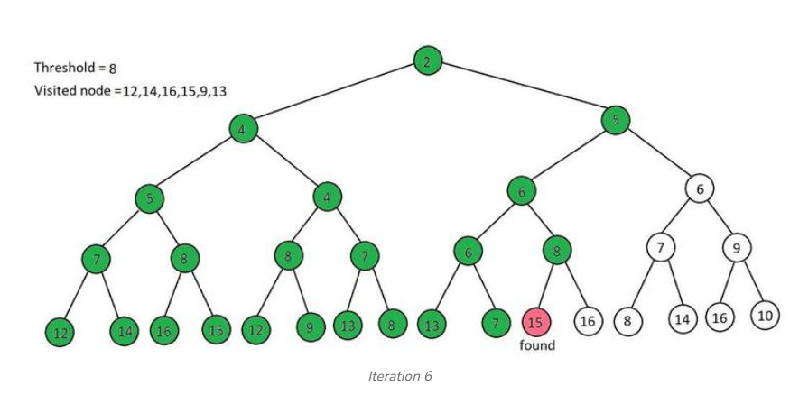
Sexta iteração do algoritmo de busca A∗ com aprofundamento iterativa.
Busca recursiva do melhor primeiro
Algoritmo com funcionalidade semelhante à busca do melhor primeiro, no entanto este tem a capacidade de "retroceder" se considerar que o caminho atual não é o melhor e existe uma alternativa que poderia dar melhores resultados. Isso é feito usando um valor f que serve como limite, se um nó atinge esse valor é retornado para seu antepassado, substitui o valor do limite pelo do nó e expande-se um nó alternativo que tenha o melhor valor f(n). Este algoritmo é ótimo se a heurística h(n) for admissível, ou seja, não superestime o custo real de alcançar o nó alvo. A complexidade espacial é linear à profundidade da solução com menor custo mais profunda, a complexidade de tempo varia muito, depende principalmente da precisão da função heurística e quantas vezes se muda de caminho. [5]
Pesquisa heurística bidirecional
Algoritmo que implementa a funcionalidade de busca bidirecional com uma fórmula heurística para determinar qual nó será expandido entre as duas fronteiras. Uma maneira de fazer isso seria usando a fórmula de busca A f (n) = g(n) + h(n), no entanto para que isso funcione a heurística dessa fórmula deve ser diferente para cada um dos dois busques que são feitos, porque ambos têm objetivos diferentes uma tenta ir para o objetivo e outra para a origem, por isso devem ser usadas duas fórmulas distintas fF(n) =gF(n) + hF(n) para busca que vai para o alvo e fB(n) = gB(n) + hB(n) para busca que vai para o nó raiz. Outra forma que pode ser feita é usando a fórmula f2(n) = max(2g(n),g(n)+h(n)), esta ao contrário da fórmula de busca A pode ser usada para ambos os busses, expande-se o nó que tem o valor mínimo f2(n). Sua eficácia depende da qualidade da heurística, se essa heurística é boa busca A* dá melhores resultados, se a qualidade é regular procura bidirecional é preferida porque explora menos nós e se a heurística é má ambas têm um desempenho quase igual. Este algoritmo é completo e ótimo. [5]
Exemplo de implementação de busca informada
Algoritmo que usa beam search para encontrar os b (neste caso 3) melhores caminhos no grafo (caminhos com menor custo). Isto é, b é a largura do raio, assim como também é o valor limite. Para este exemplo, assume-se que todos os nós estão conectados a todos os outros nós. As posições na matriz são os nós e os números em cada posição é o custo de chegar a esse nó.
from numpy import array
def beam_search(distances, beta):
paths_so_far = [[list(), 0]]
for idx, tier in enumerate(distances):
if idx > 0:
print(f'Paths kept after tier {idx-1}:')
print(*paths_so_far, sep='\n')
paths_at_tier = list()
for i in range(len(paths_so_far)):
path, distance = paths_so_far[i]
for j in range(len(tier)):
path_extended = [path + [j], distance + tier[j]]
paths_at_tier.append(path_extended)
paths_ordered = sorted(paths_at_tier, key=lambda element: element[1])
paths_so_far = paths_ordered[:beta]
print(f'\nPaths pruned after tier {idx}: ')
print(*paths_ordered[beta:], sep='\n')
return paths_so_far
dists = [[1, 3, 2, 5, 8],
[4, 7, 9, 6, 7]]
dists = array(dists)
best_beta_paths = beam_search(dists, 3)
print('\nThe best \'beta\' paths:')
for beta_path in best_beta_paths:
print(beta_path)